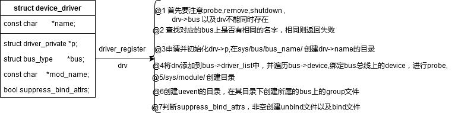

相关的文件：
linux-3.16.82\linux-3.16.82\include\linux\device.h linux-3.16.82\linux-3.16.82\drivers\base\driver.c
相关的结构体
struct device_driver {
const char *name;
struct bus_type *bus;
struct module *owner;
const char *mod_name; /* used for built-in modules */
bool suppress_bind_attrs; /* disables bind/unbind via sysfs */
const struct of_device_id *of_match_table;
const struct acpi_device_id *acpi_match_table;
int (*probe) (struct device *dev);
int (*remove) (struct device *dev);
void (*shutdown) (struct device *dev);
int (*suspend) (struct device *dev, pm_message_t state);
int (*resume) (struct device *dev);
const struct attribute_group **groups;
/*关于电源管理的，赋值其ops，包含其它的driver中，建议初始化其ops，总线*/
const struct dev_pm_ops *pm;
struct driver_private *p;
};
struct driver_attribute {
struct attribute attr;
ssize_t (*show)(struct device_driver *driver, char *buf);
ssize_t (*store)(struct device_driver *driver, const char *buf,
size_t count);
};
相关的API：
extern int __must_check driver_register(struct device_driver *drv);
extern void driver_unregister(struct device_driver *drv);
extern struct device_driver *driver_find(const char *name,
struct bus_type *bus);
extern int driver_probe_done(void);
extern void wait_for_device_probe(void);

勘误：@6：创建uevent的文件